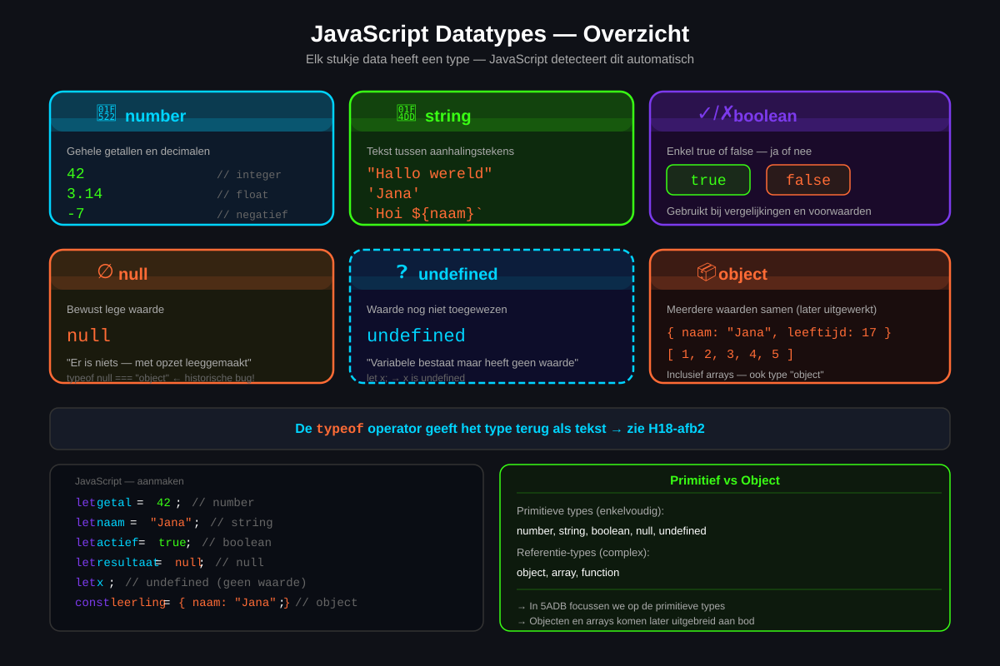
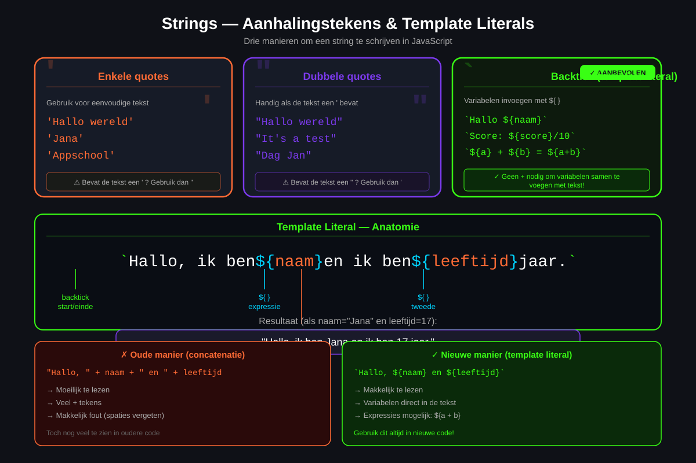
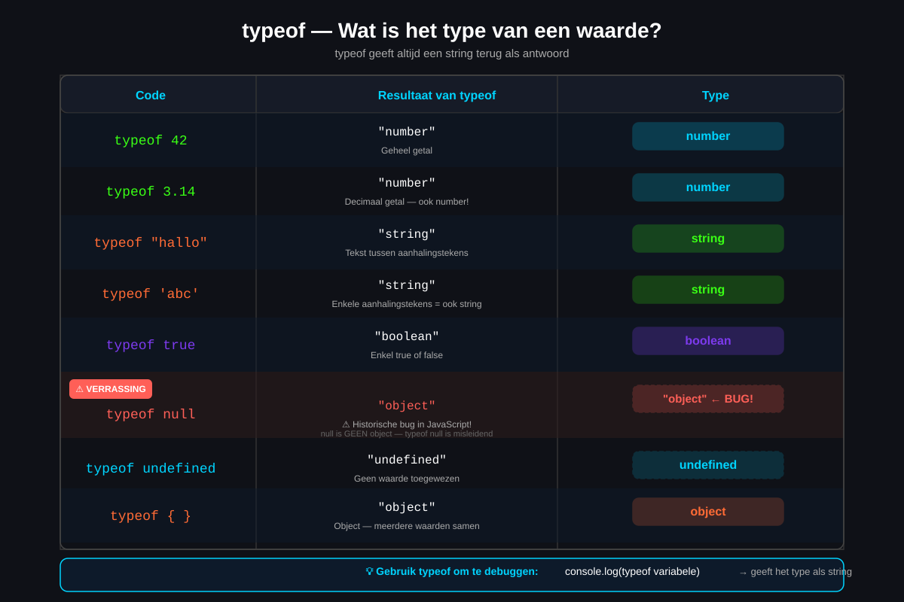
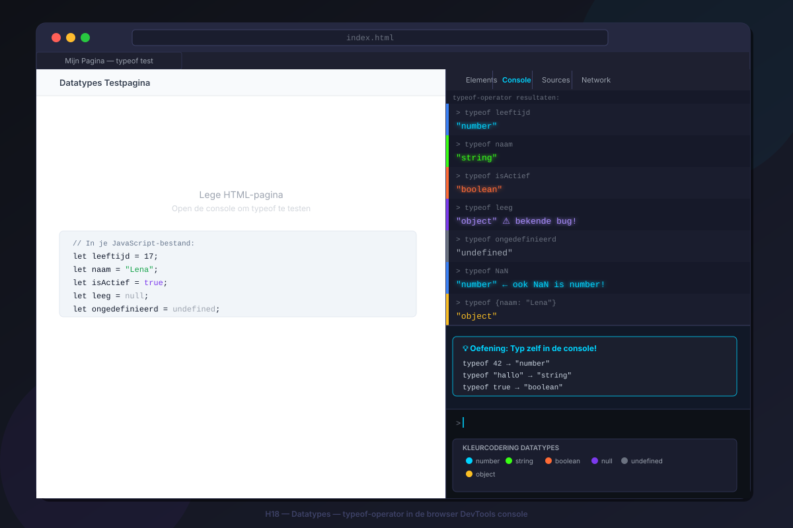

Datatypes
- Je kan de zes primitieve datatypes in JavaScript benoemen en beschrijven
- Je kan het verschil uitleggen tussen
number,string,boolean,null,undefinedenobject - Je kan de
typeof-operator gebruiken om het datatype van een waarde op te vragen - Je kan strings schrijven met enkele aanhalingstekens, dubbele aanhalingstekens én template literals
- Je kan escape-tekens gebruiken in strings (
\n,\',\\) - Je kan uitleggen wat
NaNis en wanneer het ontstaat
1. Wat zijn datatypes?
Als je een variabele aanmaakt in JavaScript, sla je er een waarde in op. Maar niet alle waarden zijn hetzelfde: een getal is iets anders dan een stuk tekst, en tekst is iets anders dan true of false.
Een datatype bepaalt wat voor soort waarde iets is én wat je ermee kan doen.
let leeftijd = 17; // een getal
let naam = "Lena"; // tekst
let isActief = true; // ja of nee
2. number — getallen
Het type number wordt gebruikt voor alle getallen: gehele getallen én kommagetallen.
let aantalLeerlingen = 28;
let prijs = 4.99;
let temperatuur = -3;
let pi = 3.14159;let a = 10;
let b = 3;
console.log(a + b); // 13
console.log(a - b); // 7
console.log(a * b); // 30
console.log(a / b); // 3.3333...
console.log(a % b); // 1 (rest bij deling)2.2 Speciale getalwaarden: Infinity en NaN
console.log(1 / 0); // Infinity
console.log(-1 / 0); // -Infinity
console.log("abc" * 2); // NaN (Not a Number)NaN (Not a Number) is van het type number — dat klinkt vreemd maar zo werkt JavaScript nu eenmaal. Gebruik isNaN() om te controleren of iets NaN is: isNaN(NaN) geeft true.
3. string — tekst
Een string is een reeks van nul of meer karakters. Je schrijft een string altijd tussen aanhalingstekens.
let voornaam = "Lena"; // dubbele aanhalingstekens
let achternaam = 'Janssen'; // enkele aanhalingstekens — zelfde resultaat
let leeg = ""; // een lege string3.2 Escape-tekens
| Escape-teken | Betekenis | Voorbeeld |
|---|---|---|
\' | Enkele aanhalingsteken | 'I\'m OK' |
\" | Dubbele aanhalingsteken | "Hij zei \"hallo\"" |
\\ | Letterlijke backslash | "C:\\Users\\lena" |
\n | Nieuwe regel | "Regel 1\nRegel 2" |
\t | Tab | "Naam:\tLena" |
4. boolean — waar of niet waar
Een boolean heeft slechts twee mogelijke waarden: true of false. Niets anders.
let isAangemeld = true;
let heeftBetaald = false;
let isVolwassen = (leeftijd >= 18); // wordt true of false5. null en undefined
null — bewust leeg
let gebruiker = null; // er is momenteel geen gebruiker ingelogdtypeof null geeft "object" terug — dat is een bekende bug in JavaScript die nooit werd opgelost. Weet dat null echter géén object is; het is zijn eigen primitief type.
undefined — onbekend
let naam;
console.log(naam); // undefined
console.log(typeof naam); // "undefined"Samengevat:
null= er is bewust geen waarde (door de programmeur ingesteld)undefined= er is nog geen waarde (de variabele bestaat maar heeft niets gekregen)
6. De typeof-operator
console.log(typeof 42); // "number"
console.log(typeof "hallo"); // "string"
console.log(typeof true); // "boolean"
console.log(typeof null); // "object" — historische bug!
console.log(typeof undefined); // "undefined"
console.log(typeof {}); // "object"
7. Template literals — de moderne manier
Template literals zijn een modernere manier om strings te schrijven. Je gebruikt backticks `. Het grote voordeel: je kan variabelen rechtstreeks in de string zetten met ${...}.
let voornaam = "Lena";
let leeftijd = 17;
// Oude manier — omslachtig:
let bericht1 = "Hallo, mijn naam is " + voornaam + " en ik ben " + leeftijd + " jaar.";
// Moderne manier — template literal:
let bericht2 = `Hallo, mijn naam is ${voornaam} en ik ben ${leeftijd} jaar.`;
// Je kan ook berekeningen zetten binnen ${}:
let a = 5;
let b = 3;
console.log(`${a} plus ${b} is ${a + b}.`); // 5 plus 3 is 8.
Oefeningen
Maak een nieuw bestand datatypes.html en voeg een <script>-blok toe. Declareer voor elk primitief datatype een variabele en gebruik console.log() om zowel de waarde als het type te tonen.
Verwacht resultaat in de console:
Naam: Lena — type: string
Leeftijd: 17 — type: number
Is actief: true — type: boolean
Score: null — type: object
Woonplaats: undefined — type: undefinedGebruik template literals om de uitvoer netjes op te maken:
console.log(`Naam: ${naam} — type: ${typeof naam}`);
Huistaak
Opdracht: Datatypes toepassen in een profielpagina
- Deel 1 — Variabelen met de juiste types (4 punten): Maak een script met variabelen voor: naam (string), leeftijd (number), gemiddelde score (number met decimaal), is ingeschreven (boolean), favoriete kleur (string), en onbekend gegeven (null of undefined). Zorg voor correcte types en betekenisvolle namen.
- Deel 2 — typeof tonen (3 punten): Gebruik
console.log()mettypeofom van elke variabele de waarde én het type te tonen. Gebruik template literals voor een nette opmaak. - Deel 3 — Template literal (3 punten): Schrijf één langere template literal die een profiel samenstelt: naam, leeftijd, status (ingeschreven of niet) en een berekening (bijv. jaar van inschrijving = huidig jaar - leeftijd + 6).
Vragenlijst
Controleer of je de leerstof van dit hoofdstuk begrijpt.
Wat geeft typeof null terug in JavaScript?
Welk symbool gebruik je voor template literals?
Wat is het verschil tussen null en undefined?
Wat is NaN?
Hoe schrijf je een variabele in een template literal?
Wat is het escape-teken voor een nieuwe regel in een string?